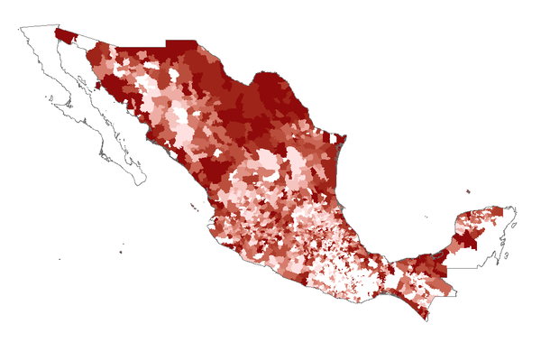
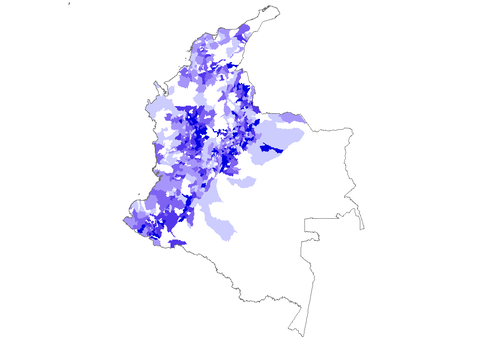

Welcome! I am a Ph.D. candidate in the Department of Government at Cornell University. My research and teaching interests include comparative politics, state-building, and historical institutional development, with a regional focus on Latin America. My dissertation examines decisive historical periods in Mexico and Colombia to investigate the origins of sub-national variation in state capacity and institutional strength. I conducted extensive fieldwork in both countries between 2015 and 2016. Using previously untapped archival sources, I show how insurgency and political cleavages during formative periods of the state shaped state capacity outcomes in various dimensions. My research has been supported by grants from Fulbright, the Mexico National Council of Science and Technology (CONACYT), and the Social Science Research Council (SSRC).
I am also interested on issues of political representation, political parties, and elections. A co-authored book chapter on the historical roots of democratic party system institutionalization in Mexico is forthcoming with Cambridge University Press. You can learn more about my research projects here and here.

Why do states develop more effective authority in some parts of their territory and domains of governance than in others? Despite the importance of state capacity for political order, economic development, and equal access to citizenship rights, the rise of effective states and the causes of chronic institutional weakness are not well understood. Moreover, few studies have sought to systematically explain the vast differences in state capacity that exist within countries, although this unevenness is a defining feature of many contemporary states.
My dissertation examines the historical foundations of state (in)capacity in Mexico and Colombia from a subnational perspective. It presents a theoretical framework to explain variation in the state’s ability to perform core functions within its territory, centered on the social and political composition of state-building coalitions during formative historical periods. I conceptualize state-building as a power struggle in which specific political groups within a polity seek to achieve institutional and ideological supremacy. The weight of different interests and preferences in initiatives to assert the authority of the state has important implications for the types of state-society relations that emerge across space. Subnational patterns of societal compliance or resistance to early state-building projects, in turn, have enduring effects on institutional development and state capacity outcomes along various dimensions.
I test the argument using within-country historical analyses, case studies, and novel historical datasets compiled through extensive archival research in both countries and covering several core dimensions of state capacity, including taxation, coercion, and public service provision. Drawing on original, municipal-level data on the incidence of violent conflict and state performance, the analysis shows that insurgent activity against the state-building coalition in the aftermath of the Mexican Revolution systematically and enduringly affected the state’s ability to exercise fiscal authority uniformly, monopolize violence, and provide routinized order. It also reveals that patterns of state capacity development in Colombia followed a partisan logic, with decisive periods of state-building under the Liberal Party leaving a legacy of lower institutional capacity in more Conservative areas.
I demonstrate that these eminently political factors matter in explaining domestic variation in state strength, even after accounting for differences in socioeconomic development, geographical conditions, preexisting levels of state capacity, and other variables. The study has important implications for our understanding of the process of state-building across geographic space, the origins of state capacity, and the political roots of institutional weakness.
Working paper here.

“Authoritarian Legacies and Party System Stability in Mexico.” In Party Systems in Latin America: Institutionalization, Decay, and Collapse. Edited by Scott Mainwaring. Forthcoming in Cambridge University Press. (With Kenneth F. Greene).
“The Political Economy of the Minimum Wage: the United States and Latin America in Comparative Perspective.” In From the Minimum Wage to a Decent Wage. Edited by Miguel A. Mancera. Distrito Federal: Cal y Arena, 2016. (In Spanish). Available here.
“A Necessary Constitutional Change.” In Social Fairness and Parliamentarism. Edited by Ricardo Becerra. Distrito Federal: Siglo XXI Editores, 2012. (In Spanish)
“Building the Modern State in Developing Countries: Understanding the Relationship between Order and Taxes with Evidence from Mexico.” (With Gustavo Flores-Macías)
What is the relationship between two central aspects of state capacity, namely taxation and order? This research contributes to answering this question by studying the determinants of citizens’ willingness to pay (WTP) taxes for improved public safety, and how much they would pay. In particular, we evaluate the role that victimization, objective safety conditions, perceptions of public safety, and socioeconomic status play in shaping citizens’ willingness to grant more resources to the state. Drawing on an original, nationally representative survey and a novel technique to estimate the value of non-market goods such as public safety, we test how these different factors affect individual WTP taxes for a 30% reduction in crime in Mexico—one of the countries in Latin America with the lowest fiscal extraction and hardest hit by the wave of criminal violence that has plagued democracies in the region.
Contrary to expectations from the literatures on victimization and state intervention as risk mitigation, we find that attitudes toward heavier taxation are driven by perceptions of public safety: those with negative perceptions of public safety are less inclined to make a fiscal sacrifice to reduce crime. Additionally, citizens with higher income are willing to pay greater absolute amounts in taxes, but lower income groups are willing to make proportionally larger contributions relative to their household income. Our micro-level evidence of the links between taxation and the provision of law and order has relevant policy implications and provides novel insight into the inner workings of the fiscal contract.